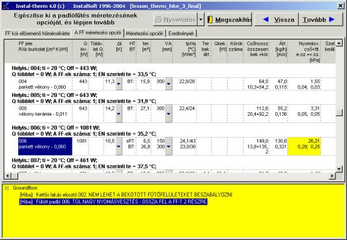
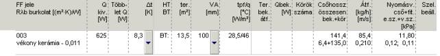
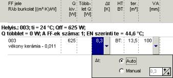
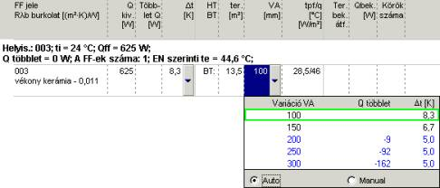
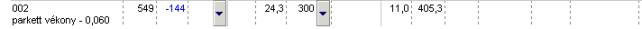

A második könyvjelzõ – az elõremenõ hõmérséklet meghatározása és erre a könyvjelzõre történõ átlépés, vagy a „Tovább” nyomógomb megnyomása után – a felületfûtések méretezésének eredményeit tartalmazza, amely ekkor már el van végezve. Mégis a méretezési opciók keretében mutatjuk be, mivel ezen a könyvjelzõn kézzel lehet manipulálni a csõkiosztásokat az egyes fûtõfelületeken. Már ekkor megjelenhetnek hibaüzenetek a felületfûtések méretezésére vonatkozóan, amelyek megakadályozzák a folytatást, és a teljes rendszer komplex méretezésének elvégzését. Ekkor egy sárga ablak jelenik meg a hibaüzenetekkel, az eredménytáblázatokban pedig, az ezeknek a hibaüzeneteknek megfelelõ mezõk pirossal alá vannak húzva. Az egymás után következõ hibaüzenetekre kattintva (az eredménytáblázatban a kurzor kijelöli a megfelelõ mezõket), majd megnyomva az F1 billentyût, részletesebb információkhoz lehet jutni a kiválasztott hibára vonatkozóan.

Ennek a könyvjelzõnek a központi részét az eredménytáblázat foglalja el. Alul található, sárga háttérrel, a méretezésre vonatkozó üzenetek táblája. Ugyancsak sárga színnel vannak megjelölve azok a sorok vagy mezõk az eredménytáblázatban, amelyekre a megjelent üzenetek vonatkoznak.
A táblázat szerkezete a következõ:
Az osztó leírása
A méretezési opciók könyvjelzõjének bal széléhez ér az osztó leírását tartalmazó sor. Minden lejjebb található, a helyiségekre és a bennük található FF-ekre vonatkozó eredményeket tartalmazó sor, ehhez az osztóhoz tartozik, egészen addig, amíg a következõ osztónak vagy bekötésekkel fûtött FF-nek a leírásához nem érünk. Az osztót leíró sor a következõ mezõket tartalmazza:
- A beállítandó osztó típusa: <Osztó_Jele> – az osztó jele (neve).
- Betáplálva …-ból: <SZK_Jele> (Te/qe = ...0C) – a szabályozási kör betáplálási forrásának jele, amelyhez az osztó tartozik, valamint, zárójelben, az ehhez a körhöz megállapított elõremenõ hõmérséklet, tehát végeredményben az osztó elõremenõ hõmérséklete.
- Osztócsonkok száma: <...> – az osztóból kilépõ osztócsonkok száma, a tartalékokkal együtt, ha ilyenek meg deklarálva lettek az adattáblázatban.
- Beállítások: <e.v.> – az osztószelepek helye az elõremenõn (e) és / vagy a visszatérõn (v).
- G: <... kg/h> – az osztó összegezett tömegárama.
- Rend. nyom. <... Pa> – a rendelkezésre álló nyomás az osztón.
A helyiség leírása
Nem nagy behúzással balról, az elsõ FF eredményeit keretezõ vonal felett, található a helyiség eredményeit tartalmazó sor. Minden lejjebb található, az egyes FF-ekre vonatkozó eredményeket tartalmazó sor, ehhez a helyiséghez tartozik, egészen addig, amíg a következõ helyiségnek vagy osztónak a leírásához nem érünk. A helyiséget leíró sor különféle színû lehet: a fekete azt jelenti, hogy a padlófûtésbõl nyert teljesítmény megfelel a kívánt értéknek, a piros a túlfûtöttséget jelezi, a kék pedig a túl kis teljesítményt. Ez a sor a következõ mezõket tartalmazza:
- Helyiség: <Jel_Helyiség> – a helyiség jele (neve).
- ti/qi = <... 0C> – a helyiség belsõ hõmérséklete.
- Q/Fff = <... W> –, a padló keresztüli hõveszteséggel csökkentett hõveszteség és a százalék, amit a padlófûtésnek fedeznie kell, alapján a helyiség adataiban beállított megkívánt teljesítménye a felületfûtésnek.
- Többlet Q/F = <... W> – az elért és a megkívánt teljesítmény különbsége. A pozitív érték a szükségeshez viszonyított teljesítménytöbbletet (a sor pirosan jelenik meg), a negatív érték a teljesítmény hiányt (a sor kéken jelenik meg) jelenik meg. Ebben a mezõben az ehhez a helyiséghez tartozó összes FF összegezett teljesítménye található.
- Az FF-ek száma: <...> – az ebben a helyiségben található fûtõkörük száma.
- te/qz az EN szerint: <...0C> – az adott helyiség fûtõköreinek elõremenõ hõmérséklete a EN szabvány szerint.
A fûtõfelületek (FF) eredményei

A rendszerben levõ összes FF-hez tartozik egy sáv az eredménytáblázatban. Itt a méretezési szempontból legfontosabb adatok, valamint az FF-re vonatkozó lényeges hõtani és hidraulikai tényezõk találhatók. Közvetlenül a helyiséget leíró sor alatt találhatók a hozzá tartozó FF-ek eredménysávjai, amelyek egyben a leírt osztóhoz vannak kapcsolva. Ha a helyiségben vannak még olyan FF-ek, amelyek más osztókhoz vannak bekötve, vagy bekötésekkel fûtöttek, akkor ezek eredménysávjai más helyen lesznek a táblázatban.
Az egyes eredménysávok tartalma megegyezik az eredménytáblázatok fejlécével, amely a felsõ részen, szürke háttérrel látható. Az eredménysáv két sorból áll, és nagy részét néhány érték foglalja el.
- Az FF jele – felsõ sor: az FF jele (neve).
- Burkolat / Rlb [(m2K)/W] – alsó sor: a padlóburkolat fajtája, valamint a burkolat hõellenállása. Ha a burkolat számértékként lett beírva, nem pedig a hozzáférhetõ opciókból választottuk ki, megjelenik az <ismeretlen burk.> felirat és a beírt ellenállás.
- Qkiv/Fkiv [W] – az adott FF-nek a Q/F automatikus felosztásakor kiosztott, vagy a felhasználó által megadott, megkívánt teljes teljesítménye.
- Többlet Q/F [W] – az elért és a megkívánt teljesítmény különbsége. A pozitív érték, amely pirosan színnel jelenik meg, a megkívánt Q/F-hoz viszonyított teljesítménytöbbletet, a negatív érték pedig, amely kék színnel jelenik meg, a teljesítmény hiányt mutatja. Az adott helyiséghez tartozó FF-ek összegezett többlet teljesítménye egyenlõ a „Többlet Q/F” mezõben látható értékkel, a helyiség leírásának sorában.
- Dt/Dq [K] – a közeg számított hõmérsékletkülönbsége (kihûlése) a fûtõkörben. A hõmérsékletkülönbség mindig az egész körre vonatkozik, még az integrált peremzónával (sPZ vagy ePZ) rendelkezõ köröknél is.
A mezõ jobb oldalán egy lefelé mutató nyíllal rendelkezõ nyomógomb, amely az Dt/Dq automatikus megválasztásának, vagy kézzel történõ megadásának ablakát nyitja meg. Az ablakocska a következõképpen néz ki:

- PZ / BZ – ez a mezõ a következõ három mezõ tartalmának leírása, és azokkal egy blokkot alkot, amely a többi függõleges mezõtõl folyamatos vonallal van elválasztva.
Ha az adott FF-nek nincs integrált peremzónája, a felsõ sorban „BZ” a belsõ zónát képezõ körre, vagy „PZ” a külön kört alkotó, peremzónaként definiált körre. Az alsó sor üres marad.
A BZ-vel integrált P-vel rendelkezõ FF-nél a felsõ sorban megjelenik a „sPZ” felírat a csõkiosztás sûrítésével létrehozott PZ-nél, vagy a „ePZ” az elsõként kapcsolt PZ esetében. Az eredmények soron következõ három mezõjében az elsõ sor ekkor az integrált PZ-re vonatkozik. Az alsó sorban a „BZ” felírat jelenik meg, és a soron következõ három mezõ alsó sora a körnek arra a részére fog vonatkozni, amely belsõ zónát képez.
- fel. [m2] – az FF vagy az FF egyes részeinek effektív felülete (lásd a „PZ / BZ” mezõ leírását). Ez az érték magában foglalja az FF teljes effektív felületét, az átmenõ bekötések felületével együtt. Az integrált PZ-vel rendelkezõ FF-eknél az átmenõ bekötések felülete mindig le van vonva az FF-nek a BZ-t alkotó részébõl, még akkor is, ha a bekötés a rajzon részben a peremzónán megy keresztül.
- T (vagy a gyártótól függõ jelölés: B, b, p, r, VA; egységek: [cm] vagy [m] vagy [mm]) – a vezetékek kiosztása az FF keretében, vagy a fektetési távolságok az egyes részeire (lásd a „PZ / BZ” mezõ leírását).
Ennek a mezõnek a jobb oldalán található egy, lefelé mutató nyíllal jelzett nyomógomb, amely lehetõvé teszi az ehhez az FF-hez használható csõkiosztások listájának megjelenítését, és a program által alapértelmezésben megadottól eltérõ kiosztás kiválasztását. A lista külalakja:

A listában van egy „…Variáció" mezõ, valamint az ehhez a változathoz tartozó eredménymezõk – „Többlet Q/F”, valamint „Dt/Dq [K]”. Alapértelmezésben, kijelölt „Auto” opciónál, a hõtani szempontból optimális változatot választja a program. Ha más változatot választunk ki, azt a program „Kézi” felirattal jelöli. A kézzel kiválasztott változatot a program megjegyzi, és nem változtatja meg a következõ méretezésnél. A hõtani szempontból optimális változathoz való visszatéréshez az „Auto” opciót kell megjelölni. Más fektetési kiosztás változat választása után ez beírásra kerül az adott FF eredménysávjába, és a program megfelelõen módosítja a többi eredményt is.
Ha az adott fektetési távolság a tff/qff_max tekintetében a szabvány túllépéséhez vezet a maximális hõmérsékletkülönbség alkalmazása esetén, akkor mellette megjelenik „A norma túllépése" felírat, és kiválaszthatatlanná válik. Ha olyan helyzet következik be, hogy még a lehetõ legkisebb Dt/Dq-nél is a visszatérõ hõmérséklet túl alacsony a ti/qi-hez képest, akkor a „Túl kicsi te/qe” üzenet jelenik meg, és a csõfektetési távolság nem kiválasztható. Ha az összes változat nem kiválasztható, akkor az adott FF teljes eredménysávja sárga színnel lesz megjelölve, a hibalistában pedig egy megfelelõ üzenet jelenik meg.
- tff/qff/q [0C] / [W/m2] – a padlófelület hõmérséklete (átlagos), valamint az adott FF-hez vagy annak egy részéhez kiszámolt hõáram sûrûsége (az egy m2-en leadott teljesítmény). (Lásd a PZ / BZ mezõ leírását).
- Az átm. bek. fel. –az átmenõ bekötések felülete. Ez a mezõ az adott FF-en átmenõ bekötések összegezett felületét jeleníti meg. Ez a felület a bekötés egyes részleteinek hosszától és a program által kiválasztott, vagy a felhasználó által megadott csõkiosztástól függ.
- Qbek/Fbek [W] - az átmenõ bekötések teljesítménye. A bekötések összegezett felületétõl, az egyes részleteknél alkalmazott csõfektetési távolságtól, a bekötések szigetelésétõl, a teljesítményük kihasználásának százalékától és a rendszer üzemi paramétereitõl függ.
- Csõhossz össz. - felsõ sor: az összegezett csõhossz az adott fûtési kör, beleértve a bekötések hosszát is.
- bek. + kör –– alsó sor: az osztótól az adott körig vezetõ bekötés hossza + a tényleges fûtési kör alkotó csõ hossza. Ennek a két értéknek az összege egyenlõ az elsõ sorból vett összes hosszal.
- Átf. [kg/h] – felsõ sor: a közeg tömegárama az adott körön keresztûl.
- [m/s] – alsó sor: a fûtõközeg átfolyási sebessége a körben.
- Nyomásveszt. csõ + id. –– felsõ sor: a vonal menti nyomásveszteség a körben a osztóhoz bekötõ csõidomokkal együtt.
- e.sz ; v.sz. [kPa] a nyomásesés az osztón elhelyezett szelepeken. Az elsõ szám az elõremenõn elhelyezett szelepen fellépõ nyomásesésre, a második a visszatérõn elhelyezett szelepen fellépõ nyomásesésre vonatkozik.
Ha az osztó nincs beszabályozva, egyes mezõk üresek lehetnek. Beszabályozott osztó esetén ez a mezõ vastagon szedett annál az FF-nél, amelyik döntõ a megkívánt rendelkezésre álló nyomás szempontjából.
! Figyelem! – a beszabályozás utáni összegzett nyomásesés meghatározása céljából, hozzá kell adni mindhárom, ebben a mezõben megjelenített értéket. Ennek az összegnek közelítõleg egyenlõnek kell lennie minden, az ehhez az osztóhoz kötött FF-re, és meg kell felelnie az osztón levõ rendelkezésre álló nyomásnak. Ha némelyik FF-nél ez az összeg jelentõsen eltér, ami az alkalmazott szelepek szabályozási tartományából való kilépés miatt következik be, akkor a hibalistában megfelelõ üzenetek jelennek meg.
- Szelepbeáll. –a beállítás az osztón elhelyezett szelepen. A zárójelben levõ betû azt jelzi, hogy a beállítás az elõremenõn – „(E)”, vagy a visszatérõn – „(V)” levõ szelepre vonatkozik. Ez a mezõ csak akkor van kitöltve, ha az egész osztó be van szabályozva.
A fent leírt struktúra nem foglalja magába a bekötésekkel fûtött felületeket. Tekintettel arra, hogy ezekhez az FF-ekhez nem lehet egyik osztót sem hozzárendelni (az FF-en különbözõ osztókból kilépõ bekötések mehetnek keresztül), a bekötésekkel fûtött FF-ek eredményei külön jelennek meg, és az adott munkalaphoz tartozó utolsó osztó utáni szekcióban jelennek meg.
A bekötésekkel fûtött FF-ek adott csoportja leírásának, a helyiségek leírásának és az egyes FF-ek eredménysávjainak egymáshoz viszonyított elhelyezkedése megegyezik a normál FF-ekével. Különbség egyedül a mezõkben és azok jelentésében van.
A bekötésekkel fûtött FF leírása
AZ ilyen típusú FF eredményei fejlécének hasonló a státusza, mint az osztó leírásának, tehát az eredménytáblázat baloldali széléhez van eltolva. Alatta található az adott munkalapon bekötésekkel fûtött FF-ekhez kacsolódó helyiségleírások és eredménysávok. A fejléc a következõ mezõket tartalmazza:
A forráshoz rendelt, bekötésekkel fûtött felületek: <Forrás_Neve> – a szabályozási kört betápláló forrás neve.
A helyiség sávja
A bekötésekkel fûtött FF-ek eredménysávja

A sáv ugyanolyan mezõket tartalmaz, mint a normál FF-eknél, azonban nem mindegyik van kitöltve. A fontosabb mezõk közé tartoznak:
- Az FF jele – jelentése ugyanaz, mint a normál FF-nél.
- Burkolat / Rlb [(m2K)/W] – jelentése ugyanaz, mint a normál FF-nél.
- Qkiv/Fkiv [W] – jelentése ugyanaz, mint a normál FF-nél.
- Többlet Q/F [W] – jelentése ugyanaz, mint a normál FF-nél.
- fel. [m2] – jelentése ugyanaz, mint a normál FF-nél.
- T (vagy a gyártótól függõ jelölés: B, b, p, r, VA; egységek: [cm] vagy [m] vagy [mm]) – azokra az adott, bekötésekkel fûtött FF-en keresztülmenõ bekötésekre vonatkozó fektetési távolság, ahol az adatoknál az (auto) opciót hagytuk meg. Némelyik bekötés más, a felhasználó által megadott fektetési távolsággal lehet lerakva. Az errõl szóló részletes információk, az egyes bekötéseknek a nyomtatáskor megjelenõ adattáblázatában találhatók.
- Az átm. bek. fel. –jelentése ugyanaz, mint a normál FF-nél.
- Qbek/Fbek [W] - az átmenõ bekötések teljesítménye. ez egyben az ilyen típusú FF összegezett elért teljesítménye.